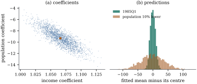

26.4 Collinearity and prediction
By Theorem 26.1.1(d),
collinearity leaves the total variance of the fitted
values, the predictions at the design points, untouched.
At a new point
26.4.1. The variance of a prediction
Keep the notation of Section 26.1:
Let
(a)
(b) If
(c) Let
Proof.
(a) This is Proposition 19.6.1(a) with
(b) By Theorem 6.3.6,
(c) Conditionally on
Part (b) answers the first question of Exercise (C1):
inside the convex hull of the data, a prediction is
never worse than the worst fitted value, however
collinear the regressors. Part (a) says what “the
pattern of the data” means: a point outside the hull is
still predicted well if its coordinates along the weak
directions are small compared with
Warning (Variance is not the whole risk). Proposition 26.4.1 is about variance under a correct model. Off the pattern of the data the model itself has not been checked, so its bias there is unknown (Section 12.3). A small prediction variance is not a guarantee.
In the consumption regression of Example (Large factors, precise estimate),
Now keep every regressor at its 1985 value except
population, which is lowered by ten per cent, to
Figure 26.4.1 shows

import numpy as np
import statsmodels.api as sm
macro = sm.datasets.macrodata.load_pandas().data
names = ["realdpi", "pop", "cpi", "m1", "tbilrate", "unemp"]
X = sm.add_constant(macro[names].to_numpy())
y = macro["realcons"].to_numpy()
n, p = X.shape
fit = sm.OLS(y, X).fit()
s = np.sqrt(fit.scale) # estimate of sigma
G = np.linalg.inv(X.T @ X)
x_on = X[104] # 1985Q1, a design point
x_mix = 0.5 * (X[40] + X[160]) # midway between 1969Q1 and 1999Q1
x_off = x_on.copy()
x_off[2] *= 0.90 # 1985Q1 with population 10% lower
for label, x0 in [("1985Q1", x_on), ("midway", x_mix), ("off pattern", x_off)]:
print(f"{label:13s} fitted {x0 @ fit.params:8.1f} sd {s * np.sqrt(x0 @ G @ x0):6.1f}")d = np.linalg.norm(X, axis=0)
U, mu, Vt = np.linalg.svd(X / d, full_matrices=False) # scaled design, as in Section 26.3
def shares(x0):
"""Contributions of the canonical directions to Var(x0' beta_hat), as fractions."""
c = (Vt @ (x0 / d)) ** 2 / mu**2 # (x0_scaled' v_k)^2 / mu_k^2
return c / c.sum()
np.set_printoptions(precision=3, suppress=True)
print("condition indices:", mu[0] / mu)
print("shares, 1985Q1 :", shares(x_on))
print("shares, off pattern :", shares(x_off))rng = np.random.default_rng(2604)
reps = 2000
Ystar = X @ fit.params + s * rng.normal(size=(reps, n)) # parametric replicates, same design
Bstar = np.linalg.solve(X.T @ X, X.T @ Ystar.T).T
print("sd of income, population coefficients:", Bstar[:, 1:3].std(axis=0))
print("correlation of the two:", np.corrcoef(Bstar[:, 1], Bstar[:, 2])[0, 1])
print("sd of predictions, 1985Q1 / off:", (Bstar @ x_on).std(), (Bstar @ x_off).std())26.4.2. Coefficients against predictions
A coefficient
26.4.3. Exercises
A. Check your understanding
For the design of Example (Two regressors that move together),
rank the following new points by the variance of the
fitted mean, without computing: the centroid;
B. Practice
Show that the bound
Solution.
Let the model have an intercept and centred
regressors, so that the rows of
Solution. With centred regressors
C. Going deeper
In the design of Example (Two regressors that move together),
suppose future regressor values satisfy